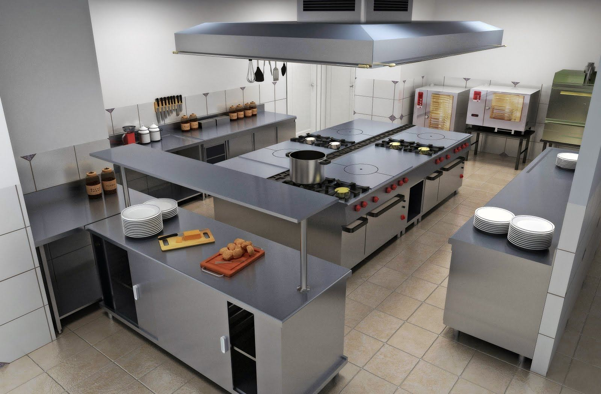
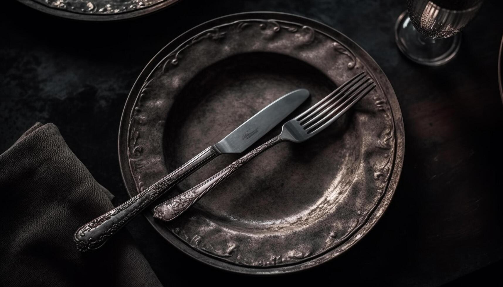

La mesa escondida que se ubica en San José centro, es un restaurante el cual surge
despues de que mi abuelo aramara una mesa la cual escondio durante años, despues de su fallecimiento
la encontramos y decidimos exivirla en nuestro restaurante y dandole el nombre de tal.
Mision, vision, valores
Nuestras visiones
Nuestras visiones, misiones y valores es que somos un restaurante
el cual quiere brindar una experiencia culinaria unica, ademas
queremos convertirnos en el restaurante preferido por nuestra comunidad,
nuestros valores que tenemos es la calidad, hospitalidad y la innovación.
Nuestro equipo
El Chef Dani García
El Chef Dani García dirige un equipo apasionado por la cocina. Su enfoque combina
técnicas tradicionales con innovación, ofreciendo platos únicos y llenos de sabor.

Nuestro propio estilo
El estilo de nuestra cocina
Nuestra cocina dedicada a la elaboración de alimentos de alta calidad
ofrecen una experiencia culinaria espectacular por nuestros ingredientes frescos
y listos para poner manos a la obra
Nuestra vibra
Ambiente y experiencia
Nuestro lugar acogedor con buena musica, un lugar tranquilo
para visitar en pareja o en familia, los meseros tienen la mejor actitud del mundo
y estaran encantados en servirte para lo que necesites
Reconocimiento
Nuestras estrellas michelin ticas
Tenemos el reconocimiento y tambien de presentarles que nuestro restaurante
tiene tres estrellas michelin.

Servicios adicionales
Servicios que te brindamos
Te brindamos cualquier servicio extra como cumpleaños, fiestas o alguna
presentacion que quieras hacer en nuestro restaurante.